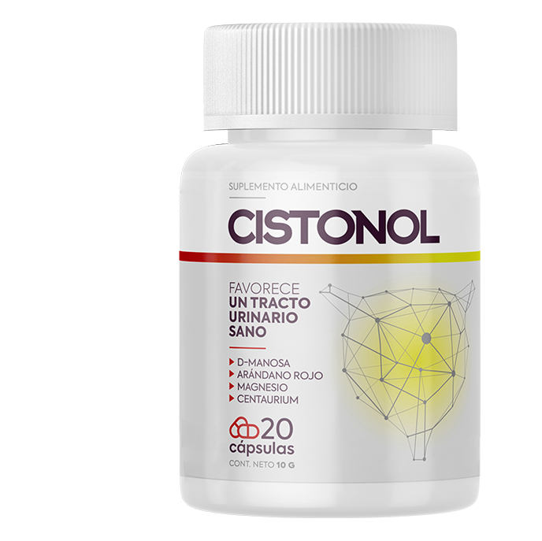

La enfermedad que siempre es inesperada: la cistitis. ¿Cómo tratarla?
2020
La prevalencia de cistitis entre personas de 20 a 70 años es críticamente alta en un contexto de curabilidad no superior al 20%. Por qué la enfermedad es tan difícil de tratar y cómo curarla definitivamente: nos lo contará el médico de categoría superior, señor Carlos Ruiz, MD.

- ¡Hola, Carlos! Dinos, por favor, ¿qué es la cistitis y quién está en riesgo?
- ¡Hola! La cistitis es una enfermedad inflamatoria del revestimiento de la vejiga que está muy extendida en las mujeres. En hombres y niños, la inflamación ocurre con mucha menos frecuencia y se manifiesta de manera más débil. Se acompaña de terribles molestias hasta la pérdida de la capacidad jurídica durante el período de exacerbación.
- ¿Es tan grave?
- Es una enfermedad insidiosa. Nueve de cada diez pacientes acuden a mí cuando no pueden hacer frente por su cuenta. Como un médico, los regaño, como un ser humano, los puedo entender. La situación es íntima, desagradable, quieren deshacerse de ella lo más pronto posible. En tales casos, el cerebro trabaja para la supervivencia propia.
En una persona con dolor agudo, ¿qué se le ocurre primero? Reducir el dolor. Y puede reducirlo solo con pastillas. Así que él corre por delante de sus instintos a la farmacia para buscar los antibióticos.
- ¿Los antibióticos son ineficaces?
- Bueno, no es que sea así. Realmente eliminan el dolor. Parece que la enfermedad ha desaparecido por completo. Pero ella no desaparece. Un mes o dos, y aparecerá de nuevo. Y allí ya está cerca la enfermedad crónica. Los antibióticos deben seleccionarse sobre la base de pruebas de laboratorio.
Primero hay que identificar el patógeno, luego eliminarlo con artillería pesada. Si los tomas caóticamente, el efecto será efímero, y luego completamente opuesto.

- ¿Qué causas y síntomas de la cistitis puedes destacar?
- La enfermedad puede ser provocada por varias causas de naturaleza infecciosa y no infecciosa. Independientemente de ellas los síntomas son siempre los mismos:
- ardor en la vagina, cólicos y dolor;
- necesidad frecuente de orinar;
- pequeñas cantidades de orina excretada;
- orina de color amarillo turbio o brillante, con y sin sangre;
- malestar, leve aumento de la temperatura corporal, debilidad.
Entre las causas más frecuentes de cistitis están:
- trauma durante el sexo;
- inmunidad debilitada;
- la penetración de bacterias a través de la uretra en la vejiga;
- focos de infección crónica en el cuerpo;
- antecedentes de enfermedades ginecológicas, venerológicas;
- hipotermia pélvica;
- efectos traumáticos;
- trastornos hormonales en el cuerpo;
- características de la estructura anatómica del tracto urinario.
- ¿Cuál es el peligro de la cistitis y el tratamiento inadecuado?
No importa cómo se desarrolle la cistitis por primera vez, la calidad de vida depende de las defensas del cuerpo. Si ya has sido tratado con antibióticos (y esta es la forma más común e ineficaz), entonces tu cuerpo está en riesgo.
Con el tiempo, las bacterias desarrollan resistencia a los antibióticos, mutan, adquieren inmunidad. Se vuelve más difícil curar la cistitis, la enfermedad adquiere una forma crónica. Esto significa que permaneces enfermo, infectado, incluso si no tienes síntomas graves de cistitis.
Las consecuencias de la cistitisincluyen: incontinencia urinaria, pielonefritis, abscesos renales, insuficiencia renal e infertilidad.

- Sin embargo, ¿se puede curar la cistitis?
- Claro. Antibióticos: solo después de un examen completo y con el control total de un médico de confianza. Los remedios a base de hierbas son buenos para la prevención de enfermedades genitourinarias, eliminan la cistitis crónica y, por supuesto, previenen la aguda.
- ¿Puedes recomendar algunos medicamentos en concreto?
- Quizás, con toda la confianza solo puedo recomendar . Es un remedio a base de plantas con la composición más rica de los llamados antibióticos naturales. Ellos, a diferencia de los sintéticos, no dañan el cuerpo. En términos de efectividad, no son inferiores a los medicamentos habituales.
Tal vez este es el único medicamento que se puede tomar sin una cita médica, tanto con los primeros síntomas de cistitis como en casos avanzados. Además, tiene un precio razonable.
- ¿Entonces se admite el tratamiento de la enfermedad sin una cita médica?
- Mira, la gente ya está tratando de curarla por su cuenta. Gracias a Dios, ahora hay , que no causa tanto daño al cuerpo como cualquier medicamento de farmacia. Es que tienen una dosis de antibiótico que puede hasta matar.
Pero no es el caso de . Su base es de plantas. El efecto es el mismo que con el acompañamiento médico, los efectos secundarios están ausentes. Es decir, sí, por supuesto, admito e incluso insisto en que las personas sean tratadas en casa, pero, por favor, trátense con medicamentos seguros.
- ¡Gracias por esta conversación, Carlos!
Para todos los interesados, hasta 2020 está disponible con un descuento del 50%. Se puede solicitarlo en el siguiente formulario
Reportero: Si no se vende en farmacias, ¿cómo se puede adquirir?
Decidimos que si las farmacias comunes ni siquiera quieren oír de nosotros, podemos hacerlo sin ellos. Organizamos una venta directa del , sin intermediarios como lo sería la farmacia comercial. Discutimos varias opciones y elegimos la más efectiva. ¡Para no ser víctima de estafadores o de falsificaciones, todos los interesados deben dejar una solicitud para el en nuestro sitio web!
El pedido irá directamente al fabricante, el operador se pondrá en contacto con usted, le proporcionará la información detallada sobre el medicamento y la hora de envío, le preguntará la dirección y el método más conveniente de entrega. El pago se realiza contra entrega por .
La persona que envíe el formulario hasta el (exclusivamente), recibirá el сon 50% de descuento! Es nuestra campaña con el Instituto. Tenemos como objetivo atraer la atención de la gente hacia el compuesto. Esperamos que el efecto «voz a voz» funcione y la persona que esté saludable lo recomiende a sus amigos.
La promoción estará vigente solo por una semana después de la fecha de lanzamiento (desde do (exclusivamente)!Después de la fecha (desde ) el precio será el estándar -. Por eso, debe darse prisa, si lee este artículo durante la promoción. Dese prisa y ordene el producto con 50% de descuento !
¡ACTUALIZACIÓNLastimosamente, unos grupos de personas deshonestas organizaron un programa en contra nuestra. Por consiguiente, deberemos finalizar la venta del por un periodo indeterminado.
Hoy es el ultimo día en el que puede ordenarlo y recibirá el por el precio de . Lo siento por los demás que no alcanzaron a ordenarlo, pero esa es la realidad en México...
Encontré el artículo muy a tiempo. Muchas gracias! Pedí , estoy esperando.
Tenía una cistitis crónica. No tenía dolores y molestias, sin embargo, después de orinar siempre tenía el malestar. El médico me aconsejó . Es un gran remedio, me ayudó muy rápidamente.
Mi hermana estudia medicina, dijo que la cistitis tiene consecuencias muy graves.
Lo peor es que la cistitis pasa a una forma crónica muy rápidamente. Lo sé. Voy a probar . Gracias por el artículo!
No tengo ni puta idea de cómo puedes ir al médico cuando apenas te mueves desde el baño hasta el inodoro cuando estás enferma. es mi salvación!!!
Por desgracia tampoco pude ir al médico durante mucho tiempo. Una lista de espera de una semana... me moriría de dolor.
La cistitis se me surgió por primera vez a los 30 años. Comencé a sentir molestias durante la micción, así como dolor durante el sexo. Inmediatamente acudí al médico. Me prescribió . El remedio me ayudó perfectamente, eliminó rápidamente todos los síntomas. ¡Lo recomiendo!
Cuanto más vieja me hago, más aterrador se vuelve vivir...
Hay que controlar la salud desde la juventud, para que luego no surjan tales problemas.
¡La cistitis es mi pena! Sufrí con ella durante siete años. Antes del embarazo era una pesadilla, hice un montón de cosas, me lavaban y calentaban la vejiga, me tomaba y me inyectaba muchas medicinas. Durante el embarazo todo desapareció y luego tuve una recaída. Terrible dolor, cólicos, y todo esto lo sufrí con un hijo pequeño en mis brazos. Sobre aprendí de una amiga, este remedio fue mi última esperanza. Y cumplió con mis expectativas. Después de un tiempo de tomarlo, los síntomas disminuyeron y luego desaparecieron por completo. es un excelente remedio.